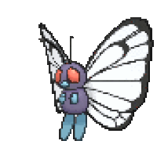

-
Bulbasaur #001

- Grama
- Veneno
Há uma semente de planta em suas costas desde o dia que este Pokémon nasce. A semente cresce lentamente.
-
Ivysaur #002

- Grama
- Veneno
Quando o bulbo em suas costas cresce, parece perder a capacidade de ficar de pé em suas patas traseiras.
-
Venusaur #003

- Grama
- Veneno
Sua planta floresce quando absorve energia solar. Ele está sempre a procura de luz do sol.
-
Charmander #004

- Fogo
Tem preferência por coisas quentes. Quando chove, dizem que o vapor jorra da ponta de sua cauda.
-
Charmeleon #005

- Fogo
Tem uma natureza bruta. Na batalha, ele chicoteia sua cauda ardente e corta com garras afiadas.
-
Charizard #006

- Fogo
Ele cospe fogo que é quente o suficiente para derreter pedregulhos. Pode causar incêndios florestais soprando chamas.
-
Squirtle #007

- Água
Quando ele retrai seu longo pescoço em seu casco, esguicha água com uma força absurda.
-
Wartortle #008

- Água
É reconhecido como um símbolo de longevidade. Se seu casco tiver algas, quer dizer que este Wartortle é muito experiente.
-
Blastoise #009

- Água
Ele esmaga seu inimigo sob seu corpo pesado para causar desmaios. Em um aperto, ele se protejerá para dentro do seu casco.
-
Caterpie #010

- Inseto
Para sua proteção, ele libera um fedor horrível da antena em sua cabeça para afastar os inimigos.
-
Metapod #011

- Inseto
Está esperando o momento de evoluir. Nesta fase, ele só pode endurecer, por isso permanece imóvel para evitar ataques.
-
ButterFree #012
- Inseto
- Voador
Ele adora o néctar das flores e pode localizar manchas de flores que contenham até mesmo pequenas quantidades de pólen.
-
Weedle #013

- Inseto
- Veneno
Cuidado com o ferrão afiado em sua cabeça. Esconde-se na grama e nos arbustos onde come folhas.
-
Kakuna #014

- Inseto
- Veneno
Capaz de se mover ligeiramente. Quando ameaçado, pode esticar o ferrão e envenenar o inimigo.
-
BeeDrill #015

- Inseto
- Veneno
Possui três ferrões venenosos nas patas dianteiras e na cauda. Eles são usados para atacar repetidamente o inimigo.